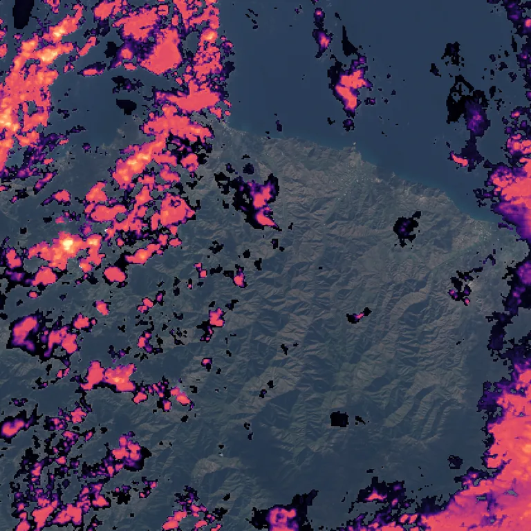

Benchmark / Use cases / Cloud optical thickness / Results / T36SVD-20170104
T36SVD-20170104

Optical thickness retrieved by Clouds Decoded, from 0.1 in black to 100 in pale yellow on a log scale, over the true-colour crop.
Sample
| surface | land |
|---|---|
| regime | mountains |
| product | S2A_MSIL1C_20170104T083332_N0500_R021_T36SVD_20231025T164235 |
| col_off | 5940 |
| row_off | 0 |
Compression ratio and optical thickness
Each point is one level of a codec, named when you point at it, on this sample.
GeoZL PIVCOGeoZL PFORJPEG XLgeorvq